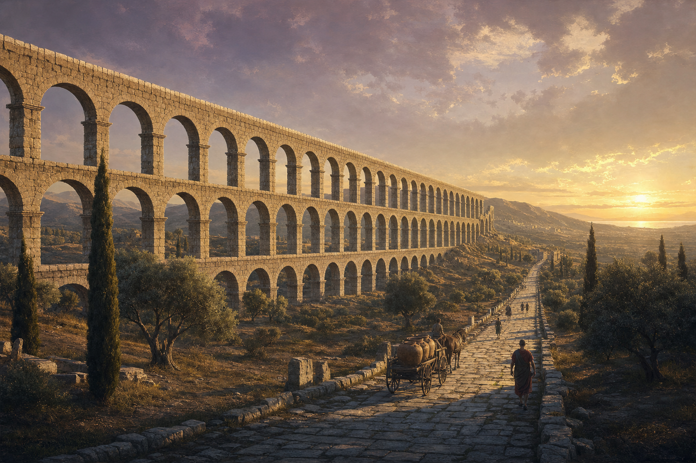
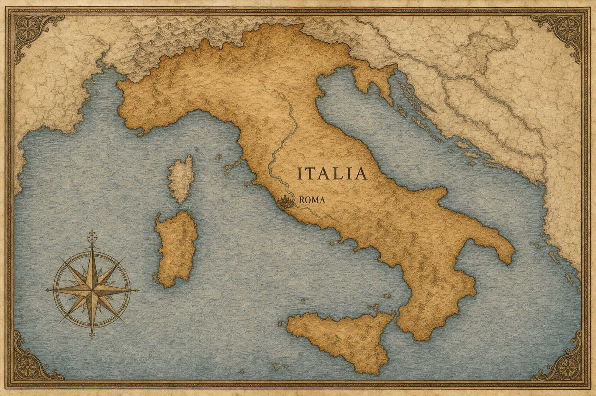
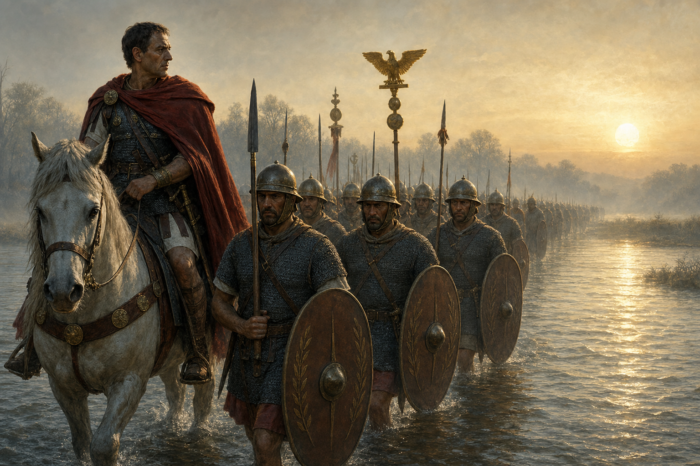
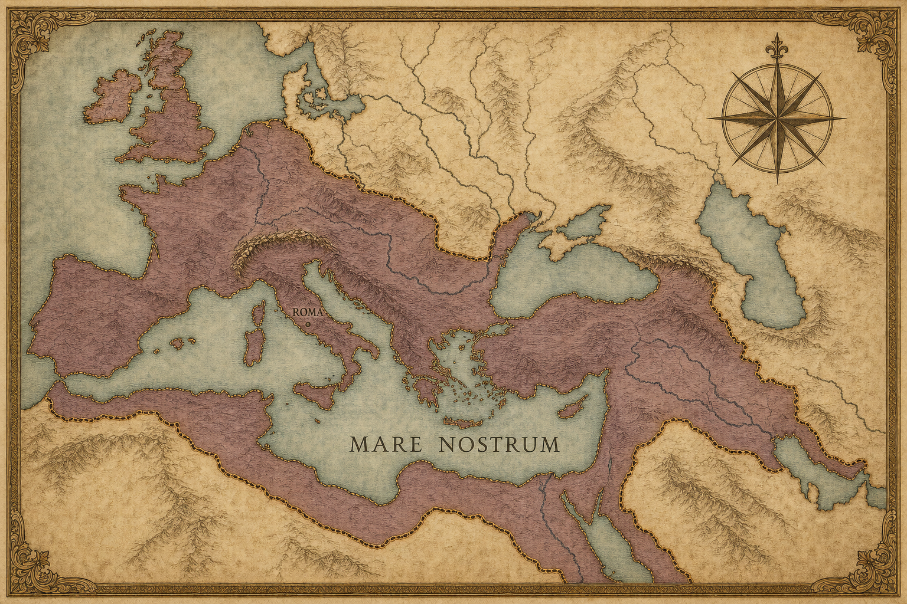
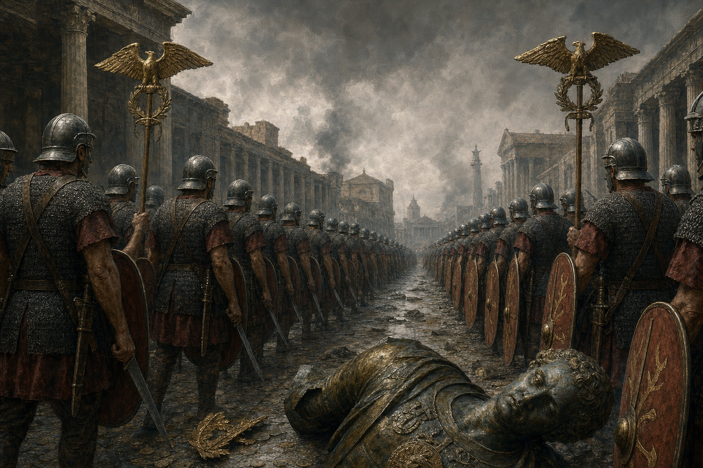
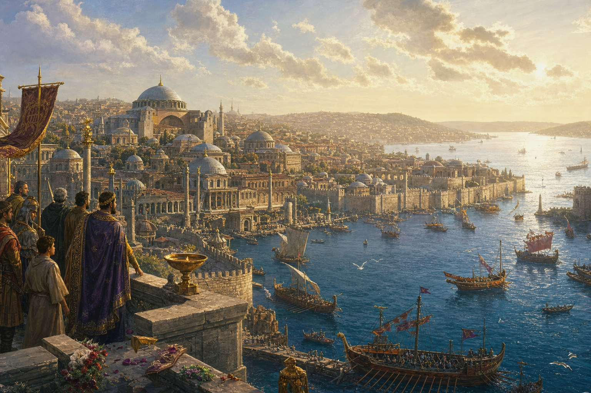
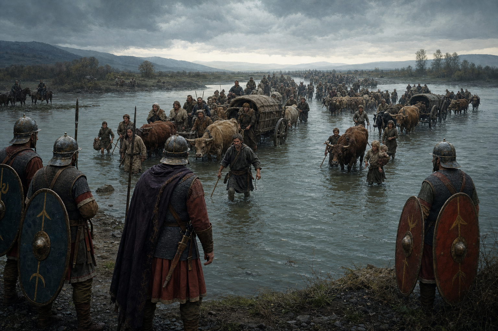
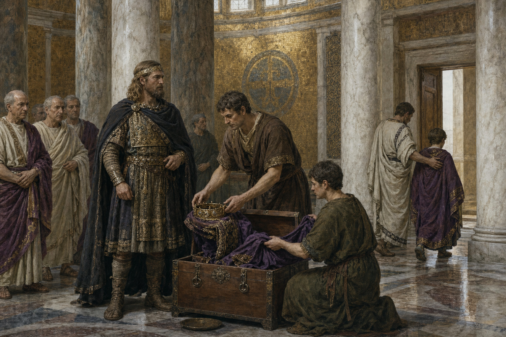
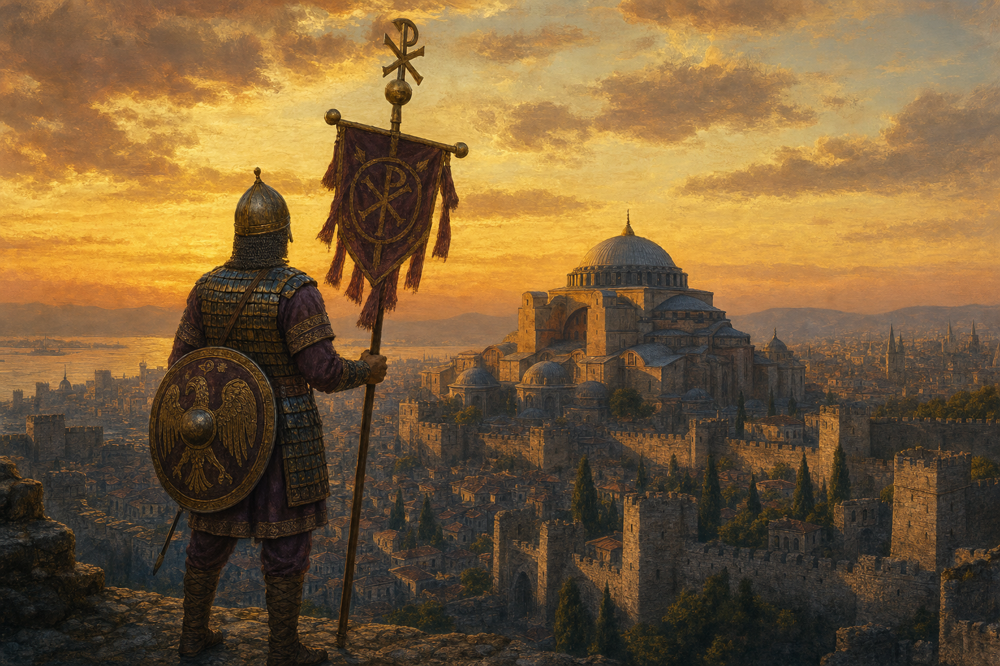

How Rome Became the World
What Happened After the Winning — the Long, Strange Story of How Rome Stopped, and Didn't
Rome · 100 BC – AD 1453

What Happened After the Winning — the Long, Strange Story of How Rome Stopped, and Didn't
Rome · 100 BC – AD 1453

In the first book we asked why Rome kept winning, and found that the usual answer — they were so organized — was only the floor it stood on. The real answer was a system: a professional army, a bottomless well of allied soldiers, a refusal to quit after even the worst defeat, and the humility to copy any good idea. Put together, it made a machine that could lose a battle — even a catastrophe like Cannae — and still win the war.
So here is the harder question. A machine like that doesn't lose. How does it ever stop?
It is tempting to imagine a single terrible day — a wave of barbarians smashing through the gates, and Rome is gone. That is the story most people half-remember. It is also wrong, and the truth is far more interesting. Rome was not knocked down from the outside. It was changed from the inside, slowly, over centuries — and the thing that changed it was not its weakness. It was its strength. Each of the four pillars that made Rome unbeatable, followed far enough, became the very thing that turned it into something else.
This is the story of what Rome became.

The first pillar to change was the one that had made Rome unbeatable in the first place: its allies.
Remember the deal. The peoples of Italy that Rome defeated were not crushed or simply taxed — they were turned into socii, allies bound by treaty to send soldiers whenever Rome called. About half of every Roman army was made of these allied Italians. They marched in Rome's wars, bled in Rome's battles, and died at Cannae beside Roman citizens. But they were not Romans. They could not vote, could not share in the spoils and the say that full citizens had. For generations they accepted this. And then they stopped.
The allies began to want the one thing their service had earned and Rome would not give: citizenship. To be Romans, not just to fight for Rome. When a Roman politician proposed to grant it and was murdered for the idea, Italy went to war with Rome — a brutal conflict we call the Social War (from socii, "allies"), in 91 BC. The allies even built their own rival state, with its own capital and its own coins, to replace the Rome that had refused them.
And here is the remarkable part. Rome won that war by giving in. In the middle of the fighting it passed a law granting citizenship to the allies — first to those who had stayed loyal, then to nearly any Italian who laid down arms and asked. The rebellion dissolved because its whole cause had been granted. Within a generation, the distinction at the heart of the old system was gone: the allies and the Romans were now one people. Italy had become Roman.
Before the Social War, "Roman" meant the citizens of one city and its neighbors. After it, "Roman" meant nearly everyone in Italy. The well of allied soldiers from book one did not run dry — it simply became Rome itself.
This was not a defeat. It was the manpower pillar completing itself. But it was also the first sign of a pattern that would repeat for five hundred years: the things that made Rome strong kept turning Rome into something new.

The second pillar to change was the army — and this change would end the Republic itself.
In Rome's early centuries, a soldier was a citizen-farmer. He owned a little land, fought the summer's war, and went home to his fields. His loyalty was to Rome, because Rome was his — his city, his land, his vote. But across the last century of the Republic, the army slowly became something else: a profession. Men with no farm to return to served for years on end, for pay, and looked to their commander to reward them and to give them land when they retired. (Historians no longer credit a single general with one grand reform here — the change came gradually, out of long wars and hard necessity.)
Follow that small shift to its end and you get an earthquake. If a soldier's land and pay and future came from his general, not from Rome, then his loyalty did too. A commander who won wars and looked after his men commanded something no Roman law had counted on: an army that would follow him — even against Rome.
And so they did. One general marched his legions on the city of Rome itself, something once unthinkable. Another, named Julius Caesar, led his army across a small river called the Rubicon — the border he was forbidden to cross under arms — and plunged the Republic into civil war. For the better part of a century, Roman armies fought each other, each loyal to its own general, until only one man was left standing: Caesar's heir, Augustus. He kept the comforting old words — Senate, Republic, consul — but the reality was new. One man now held the armies, and through them, everything. The Republic was over. The Empire had begun.
A citizen fights for his city. A professional fights for whoever pays him. Rome did not notice the difference until its own armies were marching on Rome.

For a while — a long while — the change looked like pure triumph.
Under the emperors, Rome reached its greatest size and its deepest peace. At its height the Empire ran from the rain of northern Britain to the sands beyond the Euphrates, from the Rhine to the edge of the Sahara. The entire Mediterranean Sea was a Roman lake; Romans called it Mare Nostrum — "our sea." For roughly two hundred years, a traveler could go from one end of this world to the other on Roman roads, under Roman law, using Roman coins, in a peace so famous it has its own name: the Pax Romana, the Roman Peace. More people lived more safely under one government than ever before in that part of the world.
It was the machine at its grandest. But grandeur and danger, it turned out, were the same fact.
An empire that vast had an enormous frontier to guard — thousands of miles of river and desert and wall, every mile of it a place where trouble could come in. And an empire ruled by one all-powerful emperor had a new and terrible weak point that the old Republic never had: the throne itself. When everything flows from one man, then whoever controls that one man — or kills him and takes his place — controls everything. The greatest prize in the world was now a single chair. Sooner or later, men with armies were going to fight over it.
At its peak the Roman Empire held perhaps a quarter of all the people alive on Earth, tied together by some 80,000 kilometers of paved roads — enough to wrap twice around the planet.

The fight over the throne came, and it nearly destroyed everything.
For about fifty years in the third century, Rome tore itself apart. Emperor after emperor was raised up by his own soldiers and then murdered — often within months — by the next general who wanted the chair. In that half-century more than twenty men wore the purple, and almost none of them died in bed. This was the third pillar of book one — Rome's incredible resilience, its civic will to pull together and endure — turned inside out. The same fierce energy that once let Rome raise a new army after Cannae was now spent by Romans killing Romans for the crown.
And while Rome fought itself, everything else came apart at once. A terrible plague swept the empire, emptying farms and thinning the army. To pay the soldiers who made and unmade emperors, the government quietly cheated its own money — mixing less and less silver into each coin until the coins were nearly worthless and prices spun out of control. Under the strain the empire even split into three for a time, with a breakaway state in the west and another in the east, and the battered center struggling between them.
For any other power, this would have been the end — and it nearly was. But remember what kind of machine this was. Rome had one more great adaptation left in it.
The Republic's deadliest enemy had been Hannibal. The Empire's deadliest enemy was itself — its own generals, fighting over its own throne.

Rome saved itself the way it always had: by changing.
A soldier-emperor named Diocletian dragged the empire back from the edge and rebuilt it from the ground up. His boldest idea faced the problem head-on: the empire was too big for one man to rule and defend, and one throne was too dangerous a prize. So he split the job. Instead of a single emperor, there would be several, ruling different regions at once — a senior emperor in the west and one in the east, each with a deputy. He remade the provinces, the army, and the taxes to match. It was the adaptation pillar working one last great time: faced with a deadly problem, Rome redesigned itself around it.
Then came Constantine, who added the change that mattered most for our story. He built a magnificent new capital in the east, on the Greek city of Byzantium where Europe meets Asia, and named it after himself: Constantinople. Rich, superbly defended behind massive walls, sitting astride the trade of two continents, it became the true center of the Roman world. The heart of the empire had moved — away from Italy, away from the old city of Rome, eastward.
The empire survived. But it was now, in practice, two empires — a wealthier, stronger Greek-speaking East, and a poorer, more exposed Latin West — drifting slowly apart, and after a while never ruled as one again. When the storm came, it would not fall on both halves equally.
The old city of Rome had not been the seat of government for a long time. The western emperors ruled from Milan, and then from Ravenna, a city ringed by marshes that was easy to defend. By the year 400, "Rome" the capital and Rome the city were two different things.

Now the fourth and last pillar — adaptation, Rome's genius for absorbing whatever worked — reaches its limit, and its limit is the turning point of the whole story.
Rome had always taken in outsiders: it copied their weapons, hired their soldiers, made citizens of whole nations. By the late empire it was doing this on the largest scale yet. The frontier peoples north of the borders — the Romans lumped them together as "barbarians," though they were many different nations, often Christian, many of them lifelong Roman soldiers — were increasingly invited inside the empire to live and to fight for it. Whole armed peoples were settled on Roman land as foederati, federated allies, keeping their own leaders and fighting under their own chiefs. The army defending Rome was, more and more, made of the very peoples it was defending against.
Usually it worked. Once, disastrously, it did not. In the year 376, a great nation of Goths, fleeing a terrifying people called the Huns sweeping in from the east, begged to cross the Danube river and shelter inside the empire. Rome let them in — and then Roman officials cheated and starved them until, desperate, they revolted. Two years later the eastern emperor marched out to crush them near a town called Adrianople, and instead the Goths destroyed him: the emperor was killed and two-thirds of his army with him, in one of the worst defeats in Roman history. The peace that followed left an armed, independent Gothic nation living inside the empire — no longer quite absorbed, no longer quite enemy.
After that the dam did not hold. Whole peoples moved across the frontiers, sometimes as enemies, sometimes as allies, often as both in the same year. In 410, a Gothic army did the unthinkable and sacked the city of Rome itself — the first enemy to take the city in nearly eight hundred years. The shock rang through the world. And yet, in cold fact, Rome was no longer even the capital: the real government sat safe behind its marshes in Ravenna. The newcomers were not battering down the gates of power. They were already inside.

We come, at last, to the famous "fall of Rome." It is not the scene you are picturing.
There was no final battle for the city, no last emperor dying sword in hand on the walls. What actually happened, in the year 476, was almost an anticlimax. By then the western emperors were boys and puppets, and the real power in Italy was a general of Germanic soldiers named Odoacer — himself an officer of the Roman army. Odoacer saw no more use for the pretense. He removed the last boy to hold the title in the west, a child with the grand name Romulus Augustulus, and simply did not appoint anyone in his place. He sent the imperial crown and robes east to the emperor in Constantinople, with a message: the west no longer needs an emperor of its own. He would rule Italy as a king — under Roman law, with the Roman Senate still meeting, in Latin, on Roman roads, in Roman cities.
And that was the "fall." Not a slaughter — a title quietly allowed to lapse. Most people alive that year would not have noticed a thing had changed. Across the old western empire, Gothic and Frankish kings now ruled in place of emperors, but they kept Roman law, Roman language, Roman officials, the Roman church. In a hundred everyday ways, the West stayed Roman.
But we should be honest, because this is the true story and not a comforting one. For ordinary people in the West, the slow unwinding was real and often hard. As the single great empire broke into smaller, poorer kingdoms, much was genuinely lost: long-distance trade shrank, once-busy towns emptied, fine goods and even simple skills like good pottery and widespread reading grew scarce. The light did not go out in a night — but over the western lands, for a century or two, it did dim. To say "Rome did not fall in a day" is not to say nothing was lost. A great deal was.
The end of the Western Roman Empire was not a battle. It was a man deciding the title was not worth filling, and putting the crown in a box.

So did Rome fall? Look east, and the question gets strange.
While the western title quietly lapsed, the eastern empire — the richer, stronger half, ruled from Constantinople — did not fall at all. It went on. Not for a few more years: for nearly a thousand more, an unbroken Roman state with a Roman emperor, Roman law, and a Roman army, outlasting the western half by a span longer than the entire history of the Republic and western Empire combined. We have a habit of calling this eastern empire "Byzantine," as if it were something else — but that name was invented by scholars a thousand years later. The people who lived in it never used it. They called themselves what they were: Romans. Rhomaioi. Their state was the Roman Empire. To them, Rome had not fallen in 476 or in any other year. It had simply, long ago, moved its capital east — and it would keep calling itself Rome until 1453, when Constantinople's great walls were finally overcome at last.
So here is the honest answer to how the unbeatable machine stopped. It was never beaten. Each of the four strengths that made Rome win, followed to its end, became the thing that transformed it:
That bottomless well of soldiers demanded to be Rome, and were granted it. Italy became Roman, and the old distinction that built the system dissolved.
Once citizen-farmers loyal to their city, they became professionals loyal to their general — and that loyalty ended the Republic and raised the Empire.
Once a shared civic cause, it became a single throne, the deadliest prize in the world, and Romans spent their resilience destroying one another to hold it.
Rome's habit of taking in whatever worked took in whole armed nations, until the newcomers inherited the West and Rome dissolved into the world it had made Roman.
Rome did not end with a bang or a surrender. It changed, and changed, and changed, until the question "when did it fall?" stopped having a clear answer. The city's empire became a Mediterranean world; that world became Latin Europe and Greek Byzantium; and the idea of Rome outlived them all — in our laws, our languages, our letters, the very months of our calendar. Book one asked why Rome kept winning. The answer to this book is stranger and larger: in the end, Rome did not so much win the world as become it.
Ask "when did Rome fall?" and history shrugs. The Republic became an Empire; the Empire became two; the West became Europe; the East called itself Rome for another thousand years. Rome did not fall. It turned into everything that came after.
Five questions about what you just read.
Rome did not fall. It changed, and changed, and changed — until it had turned into the world that came after it.
Based on the histories of the late Republic and Empire, and on the modern debate over Rome's transformation —
Peter Brown's The World of Late Antiquity and Bryan Ward-Perkins's The Fall of Rome and the End of Civilization